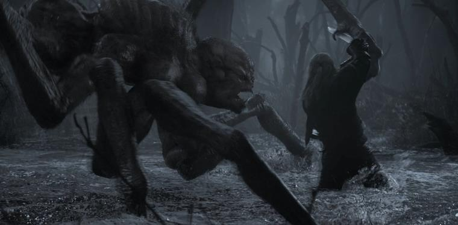
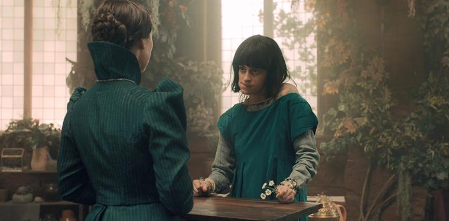
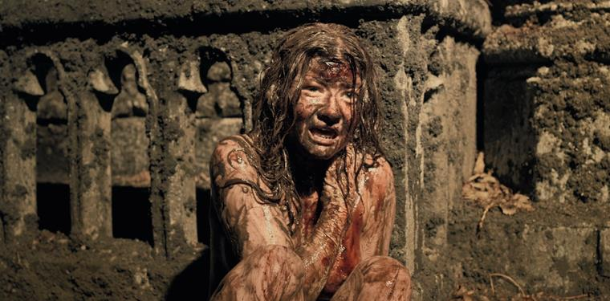
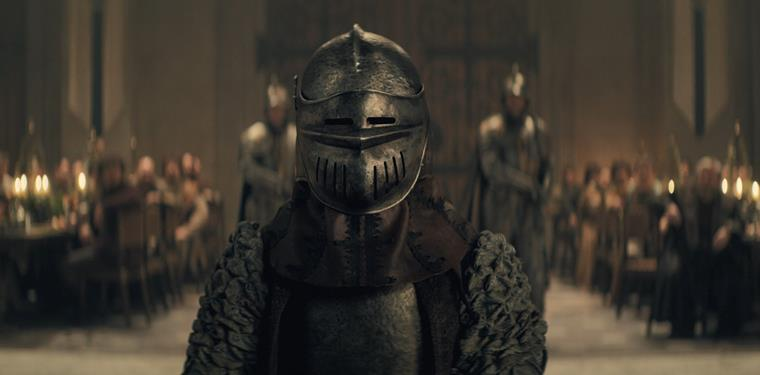
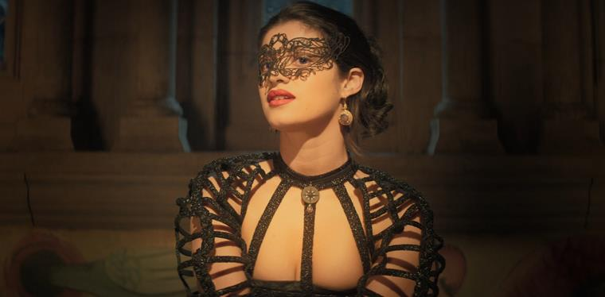
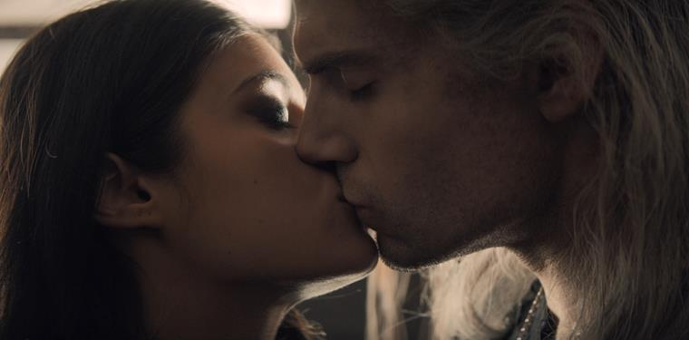
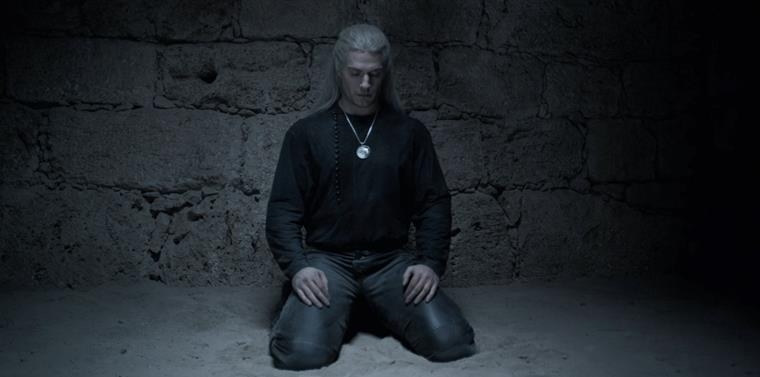
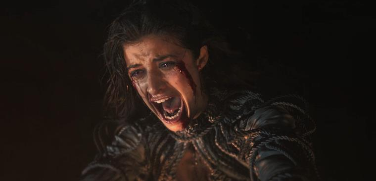

Начало конца
Геральт из Ривии, беловолосый воин-мутант, ведьмак, сражается в туманных болотах с кикиморой – одним из самых опасных
монстров на всем Континенте.После победы над кикиморой ведьмак отправляется в городок под названием Блавикен, чтобы продать там шкуру монстра и
выручить несколько золотых монет за свой трофей. Здесь, в местном трактире, он знакомится с молодой девушкой по имени
Ренфри.
Четыре знака
Вторая серия рассказывает историю Континента – оказывается, люди не всегда жили в этих землях. Континент населяли эльфы,
а затем, в результате Слияния Сфер, граница между миром людей и миром эльфов оказалась размыта. Люди пришли в мир
эльфов, научились у них магии, а потом безжалостно истребили эльфийский народ.
Предательская луна
В третьей серии «Ведьмака» зрителю становится понятно, что сюжетные линии в сериале не пересекаются по времени. Линия
Йеннифер происходит во времени, предшествующей историям Геральта и Цири. Разница во времени составляет примерно два
десятилетия – во время обучения Йеннифер Нильфгаард еще считался мелким южным королевством, на который крупные
государства не обращали особого внимания, тогда как Цинтра представляла собой наиболее могущественное королевство.
Банкеты, ублюдки и похороны
В этом эпизоде становится понятно, что история Геральта тоже показана в нескольких временных отрезках. События 4 серии
(пиршество у королевы Каланте) произошло за 12 лет до нападения на Цинтру войска Нильфгаарда.
Бутылочные аппетиты
В 5 серии 1 сезона «Ведьмака» происходит некое событие, которое может оказать существенное влияние на дальнейший ход
повествования – третье желание Геральта. Что именно загадал ведьмак в своем третьем желании неизвестно, но стало
понятно, что судьбы Йеннифер и Геральта отныне навсегда переплетены. Интрига раскрывается в 6 серии сериала.
Редкие виды
Геральт и Йеннифер оказываются вовлечены в поиски дракона. Несколько конкурирующих группировок отправляются искать
дракона, Геральт примыкает к группе человека по имени Борх, тогда как Йеннифер помогает в поисках глупому и
самовлюбленному рыцарю, прибывшему из далеких земель за славой.
Перед падением
Зрителю становится известно, что приказ раненой королевы Каланте «привести его из башни» относится к ведьмаку.
Вторгнувшиеся в замок нильфгаардцы «переубедили» королеву, теперь она сама хочет, чтобы Геральт взял на себя заботу о
Цири. Однако ведьмак к этому момент успел сбежать из башни.
Нечто большее
Первый сезон закончен. Зрителю становится понятно, что в сериале оказываются навсегда связанными три ключевых персонажа:
Геральт, Йеннифер и Цири. Цири является предназначением Геральта по Праву на неожиданность, а пути Геральта и Йеннифер
навсегда переплетены после третьего желания ведьмака. Йеннифер и Цири связаны друг с другом через Геральта.